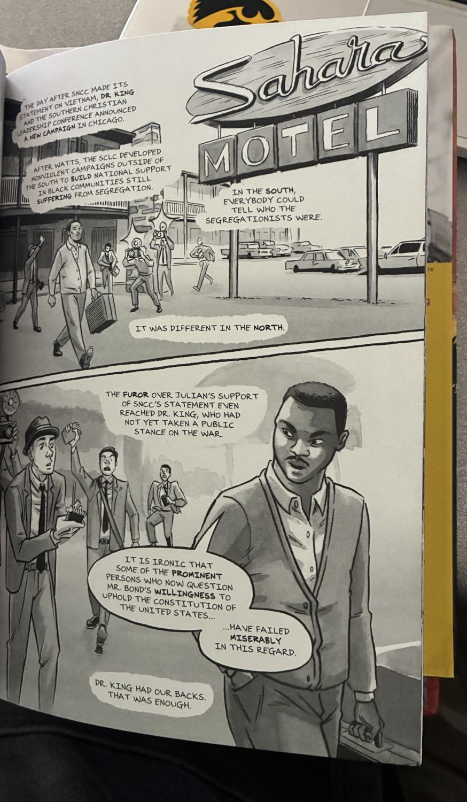

Run a rights check. For each part: read the pages on the left → get the check right → then a second check or 1–2 sentences. Done = 4 green parts, then turn in at the bottom.
Content note: These pages are from Run: Book One, John Lewis's true story. Page 3 tells how the Ku Klux Klan firebombed the home of Vernon Dahmer, a voting rights leader, and he died. It shows the burned house, not violence. Page 4 has one mild swear word.
Word help (tap to open)
- Representative = a lawmaker voters elect to speak for them
- Swearing-in / oath = the promise a new lawmaker makes before taking the job
- Expulsion = being kicked out
- Co-plaintiff = another person who signs on to a lawsuit
- First Amendment = protects freedom of speech, religion, press, and protest
- Judicial review = a court's power to say an action breaks the Constitution
- Unanimous = everyone agrees (9–0 on the Supreme Court)
- SNCC = a student civil rights group (say "snick")

Click the page to make it bigger.
Turn in your work
Your work saves on this device, so you can come back later. Your teacher sees it after you turn it in.
Pages from Run: Book One (2021) by John Lewis and Andrew Aydin, art by L. Fury with Nate Powell, Abrams ComicArts. Photographed from your teacher's copy for classroom study. Court facts: Bond v. Floyd, 385 U.S. 116 (1966).